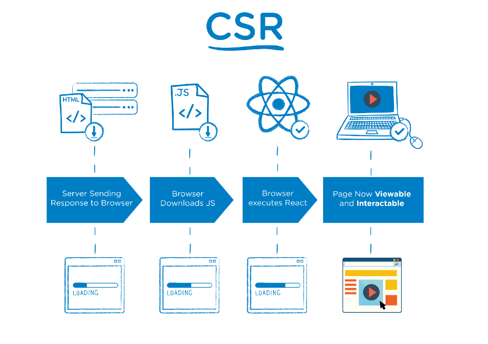
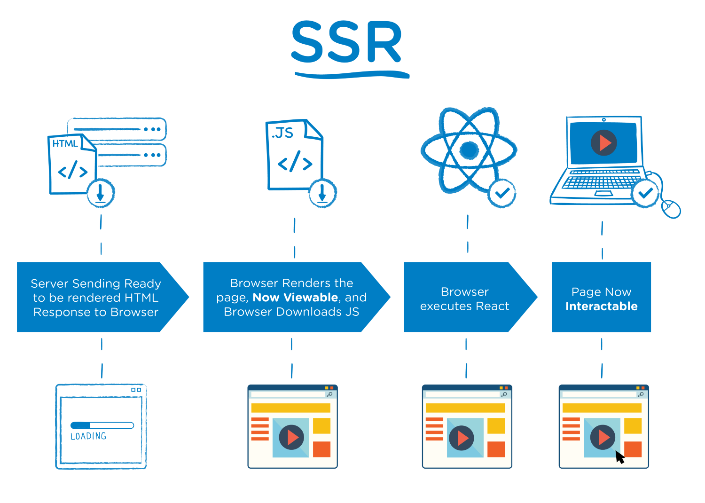

为本周的前端的框架选择做一个总结
change log：
初次写时，概念表达不太到位，再次翻阅不能起到快速回忆的目的，这里再次进行修改，删去原来的过程部分，增加CSR与SSR的技术内容。
背景
团队的前端同学们想探索一些新的框架，于是就跟他们一起做一些技术选择。
现有的前端框架分成server部分与browser部分，server中是一个node.js服务器，负责页面与路由的映射，根据路由导向不同的页面，渲染的交给了前端来完成，是一个React MPA 前端渲染的框架，设计是用的Material-UI库
发展观
随着这篇文章来梳理一下
html时代
http协议最早设计的是从服务器上获取静态的资源，其实也就是静态html模板渲染
后来Java时代，可以通过模板，将数据渲染进模板，从而生成html发送给前端，在后来的CSR出现之间，我觉得可能也没有SSR的概念。浏览器与服务端数据的交互通过表单来实现，浏览器将表达中的数据一次性通过表单提交，后代进行处理完成后可以再次渲染模板，然后将数据表达出来。
CSR(客户端侧渲染)
后来我觉得是ajax与virtual dom技术的出现，使浏览器渲染成为可能，一开始可能只是想做一点改变，感觉很平滑，后来干脆所有的dom都直接渲染，这就成成CSR这个CSR从过程上看，浏览器先去获取一个空模板，然后再获取js文件进行virtual dom的渲染，这个过程浏览器上会有一瞬的白屏。
浏览器与服务端数据交互很多时候被ajax所替代，好处是比较灵活，不论是数据交互还是页面刷新，不好处容易被滥用，使通信的效率降低，后台服务压力上升。
SSR(服务侧渲染)-追加
模板渲染就是一种SSR，这里针对的主要的是React所以略有不同，SSR主要是将render的操作放在了后端来执行，将数据从API Server取来，然后直接通过render函数渲染到页面上，并将页面返回浏览器。这样浏览器也不用再获取js，自己来渲染。不好处也比较明显，每次获取数据、渲染，对服务器的要求会比CSR高，不过模板时期也是这么玩的。另外响应感觉要比CSR慢一点。
这里要加一下看过next.js之后的感想，next.js是一个SSR的框架，它是一种MPA，提供的prefech与Dynamic Import等功能，在SSR方面做的更突出一些。isomorphic(同构渲染)-修改
Isomorphic既是CSR也是SSR，它是服务器渲染一遍，浏览器也渲染一遍。
在一些实践中服务器渲染完初识界面之后就算完成任务，其余的渲染就靠浏览器来完成。这种同构渲染感觉更偏向CSR
想象中，SSR完成之后，通过AJAX获取数据，然后根据数据做一些render，这样的效果也会不错。这种通过感觉更偏向SSR
CSR与SSR
一些文章中将Isomophic也说成SSR
差异
刚开始接触花费了挺多时间来区别这两个概念，其实从名字就能做区分，对于React而言，就是是render函数是在服务器上执行还是在浏览器上执行。SSR与CSR原理
原理从下边两张图中即可说明：


这里的SSR其实是Isomophic，它有2个入口，第一次是服务端的入口，第二次是客户端再次获取js文件渲染之后的浏览器入口。
问题
上次根据研究，已经将一个同构的React同构框架搭建起来，期间跳过了很多的坑，采用create-react-app脚手架、Typescript、express、react-router、stylus等技术。但有还是两个问题其实没有解决：
服务端代码运行
原来的框架中，运行时将Ts写的服务端代码也编译成了js之后进行运行，但在这里没有成功，原因是，原来框架中客户端与服务端的代码完全隔离，但在同构渲染时，服务端要渲染，必须要引入React的组件，而这些组件通过webpack打包之后，里边的函数没法再被server侧导入。
处理这个问题时，要么全部将Ts都通过gulp-typescript来编译成js，要么直接使用Ts，而经过确认，定于使用了Ts直接运行的方式stylus问题
这个延伸自上一个问题，由于CSS采用stylus，造成ts直接运行时，没办法转换其中的stylus模块，这个问题目前还没有找到。可能要退回到将Ts全部编译成js，然后用gulp-stylus来处理一下stylus的方式来实现，要是这样，感觉也有些不妥。